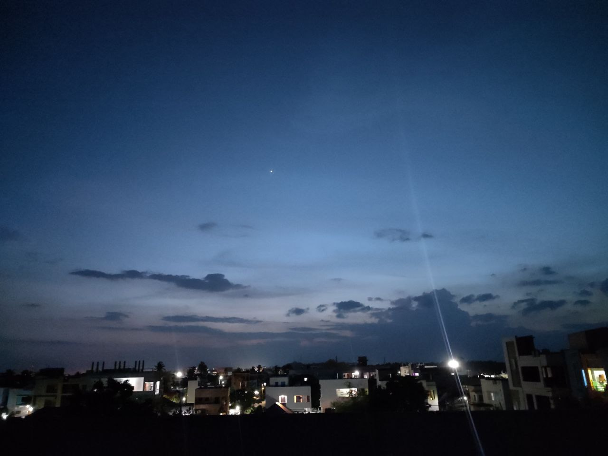
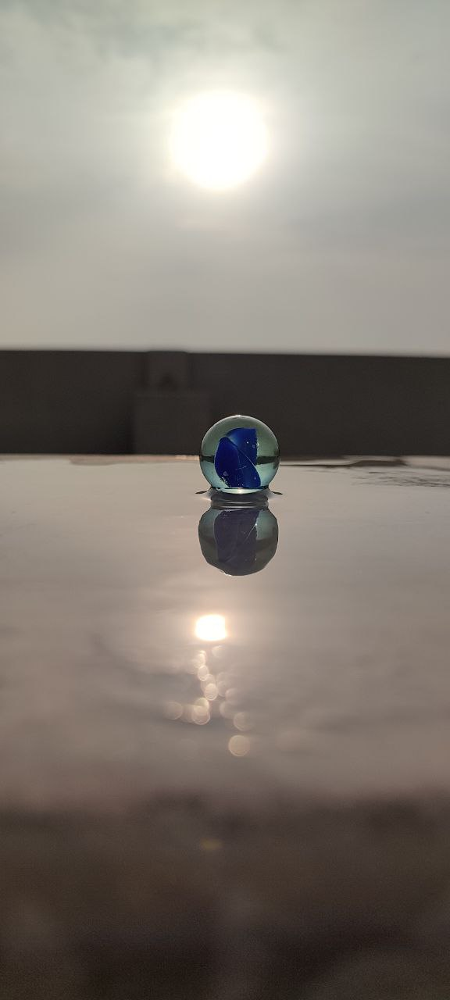
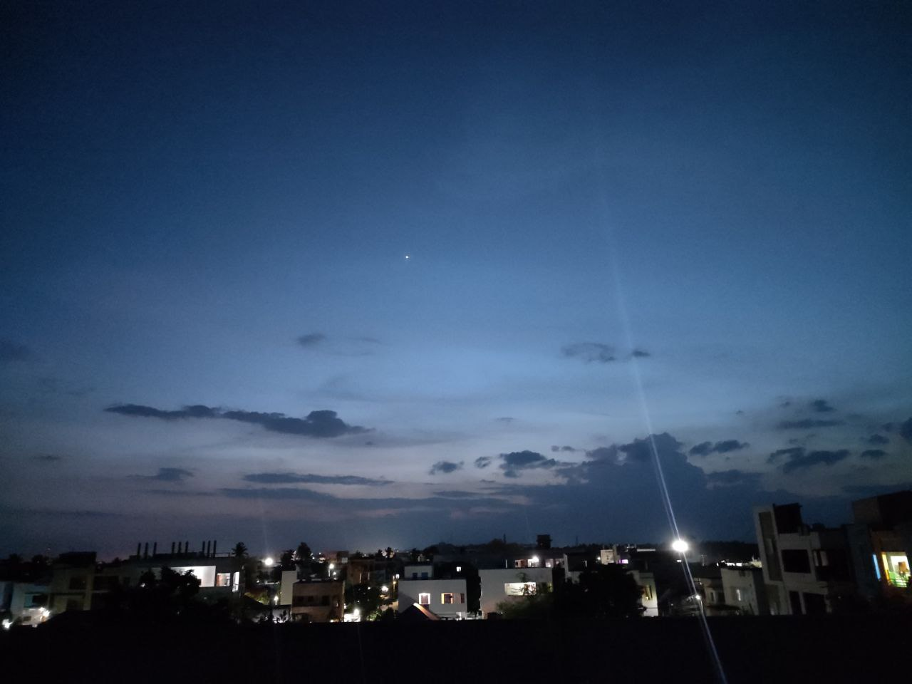
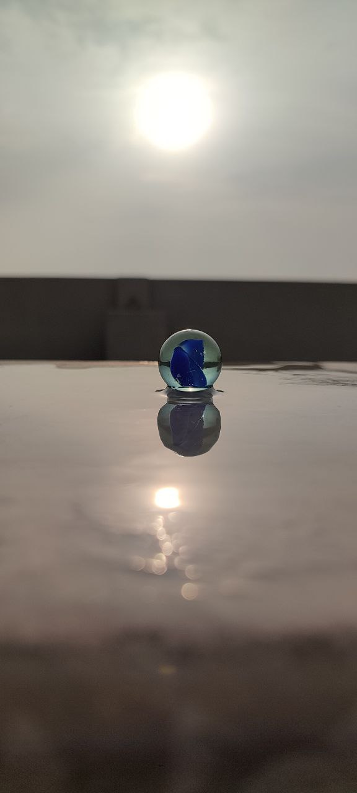

Home
!! WELCOME TO MY GALLERY !!
Welcome to my gallery website! Here, I invite you to explore a captivating collection of my photographs and graphic designs, carefully curated to showcase the beauty and creativity captured through my lens and imagination.
Each photograph portrays moments frozen in time, encapsulating emotions, landscapes, and stories waiting to be discovered. Meanwhile, the graphic designs exude artistic finesse, merging colors, shapes, and typography to create captivating visual experiences.
Thank you for visiting, and I hope my work leaves an indelible impression upon your heart and mind.
Enjoy the journey!
Photographs Designs
About
Welcome to the "About" section of my gallery website!
Photography and graphic design have been an integral part of my life, allowing me to express myself creatively and connect with the world in a unique way. In the realm of photography, every click of the shutter captures fleeting moments that narrate tales of joy, sorrow, beauty, and wonder. From mesmerizing landscapes to candid portraits, my lens serves as a window to the diverse emotions and experiences that surround us. Thank you for visiting, and I hope my work leaves an indelible impression upon your heart and mind. Enjoy the journey!
On the other hand, graphic design allows me to push the boundaries of imagination, blending colors, shapes, and typography to craft visual masterpieces. Each design piece carries a message and a purpose, conveying stories that leave a lasting impact on those who encounter them.
Thank you for taking the time to discover the essence of my artistry. It is my sincere hope that my creations resonate with your soul and inspire you to see the world through a different lens—one that celebrates the beauty of life and the boundless possibilities of human expression.
Enjoy the journey!
Photographs Designs
Photographs
 




Designs
.png)
.png)
.png)
.png)
.png)
.png)